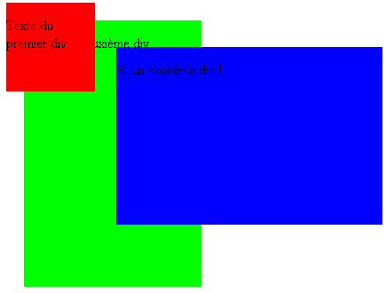
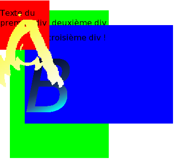

Feuilles de style
I. Positionnement et z-index
- Reproduire l'exemple suivant :
- En récupérant les images a.png et b.png, reproduire l'exemple suivant :
Retour au cours
II. Révisions : application de style
Récupérer le fichier td6.zip.
II.1 Déclaration d'une feuille de style externe
Pour chaque fichier, déclarer une feuille de style externe de nom bibliotheque.css.
II.2 Identifiants et classes
- Dans les fichiers index.html et contact.html, les listes doivent être de classe "livres".
- Pour chacun des fichiers d'auteurs (bossuet.html, moliere.html, pouchkine.html, racine.html et vercors.html), le premier span doit être de classe "dates", le second span de classe "description".
- Pour chacun des fichiers, l'élément
<div> du bas (celui qui entoure le lien) doit porter l'identifiant "basdepage".
- Pour les fichiers bios.html, bossuet.html, contact.html, index.html, moliere.html, pouchkine.html, racine.html, vercors.html, visite.html et reservation.html, l'élément
<div> du haut (celui qui entoure le titre de niveau 1) doit porter l'identifiant "bandeau".
II.3 Mise en forme générale
Ouvrir le fichier bibliotheque.css
- Spécifier que l'image yellow_paper.gif, dans le répertoire images, doit être l'image de fond.
- La police par défaut doit être par ordre de préférence Verdana, ou Arial, ou bien une famille de polices générique.
- Les liens doivent être de couleur
CC3300. Les liens actifs doivent être de couleur rouge ; les liens visités doivent être de couleur marron.
- Les niveaux de titre doivent être de préférence en police Arial, ou bien proposer une famille de polices générique.
- Les images ne doivent pas avoir de bordure.
II.4 Personnalisation des classes et identifiants
II.4.a Identifiant basdepage
Cet élément doit être centré. Il doit avoir une bordure supérieure double, de taille moyenne et de couleur marron.
II.4.b Identifiant bandeau
- Cet élément doit être centré et de hauteur 75 pixels. Il doit avoir une bordure inférieure fine, simple et de couleur marron.
- L'élément
<h1> qu'il contient doit être de taille 35 pixels, et utiliser la famille de polices générique cursive.
- Avant et après cet élément
<h1>, insérer l'image livre_ouvert.gif, qui a une largeur de 100 pixels et une hauteur de 78 pixels.
L'image insérée à gauche sera de classe "gauche", l'image insérée à droite sera de classe... "droite".
- L'image de gauche doit être positionnée dans le coin supérieur gauche.
- L'image de droite doit être positionnée dans le coin supérieur droit.
II.4.c Classes
- L'élément span de classe dates doit être en gras ; l'élément span de classe description doit être en italique.
- Les puces des listes de classe livres doivent être les images bookrouge.gif.
- L'image de classe imagemap doit être positionnée à 25% à gauche de la position qu'elle aurait eue par défaut.
{kind=link}
{kind=link}